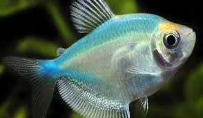

Представители рыб: протестировано ресурсом CosmoFarmer.com в компании “Apartment Laboratory”.
Рисунок 1: Бойцовская рыбка. Бойцовая рыбка, или сиамский петушок — вид рыб из семейства макроподовых. Является представителем лабиринтовых рыб. Своё название получила благодаря драчливому характеру самцов, участвовавших в турнирных боях в Азии. Популярная аквариумная рыба, известная как петушок
Рисунок 2: Европейский сарган. Европейский сарган, или обыкновенный сарган, или морская щука — вид лучепёрых рыб семейства саргановых. Совершает сезонные миграции. Весной взрослые особи подходят ближе к берегу для размножения, а зимой перемещаются в открытое море..
Рисунок 3: Обыкновенный сом. Обыкнове́нный сом, или европейский сом, — крупная пресноводная бесчешуйчатая рыба семейства сомовых.

Рисунок 4: Тернеция. Вид пресноводных лучепёрых рыб семейства харациновых, обитает в реках Мату-Гросу, Парагвай и Рио-Негро. Впервые в Европу была завезена в 1933 году. Рыба легко акклиматизировалась в неволе, охотно нерестится и оставляет богатое потомство.
Рисунок 5: Мандаринка красочная. Живописный дракончик — ярко окрашенный член семейства дракончиков, обитающий в Индо-Западной части Тихого океана: на Филиппинах, в восточной Индонезии и на северо-западе Австралии. Иногда он попадает в аквариумную торговлю, где широко известен как пятнистый мандарин, психоделический мандарин или целевой мандарин
Рисунок 6: Зебрасома бурая. коричневый хвостовик, двухцветный хвостовик, хвостовик скопас или хвостовик с кистью, представляет собой вид морских лучепёрых рыб, принадлежащих к семейству Acanthuridae, которое включает рыб-хирургов, рыб-единорогов и хвостовиков.